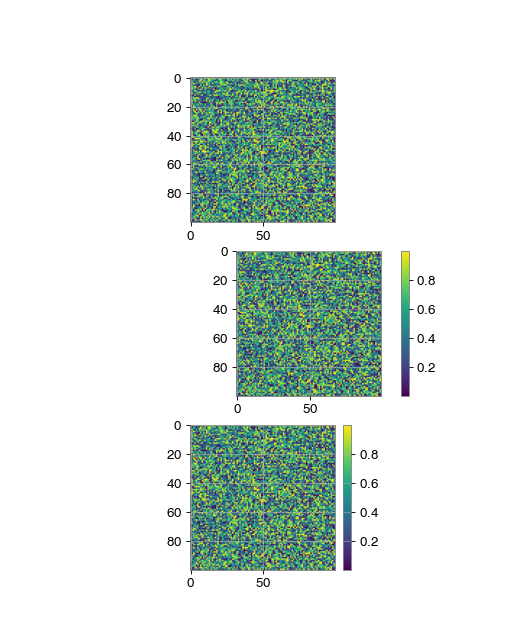
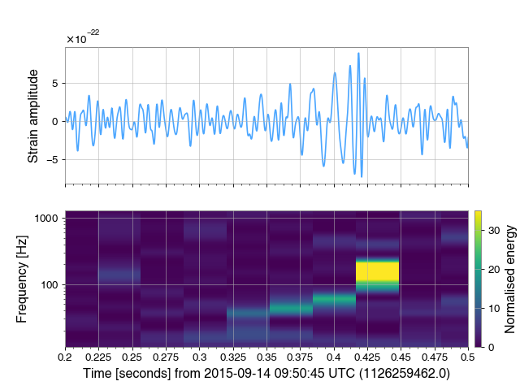

Colorbars¶
Modifications to the built-in colorbar¶
GWpy extends the built-in matplotlib
colorbar() functionality to improve the
defaults in a number of ways:
callable from the
Figure, or directly from the relevantAxesdon’t resize the anchor
Axessimpler specification of log-norm colors
better log-scale ticks
See the following example for a summary of the improvements:
import numpy
data = numpy.random.rand(100, 100)
from gwpy.timeseries import TimeSeries
from matplotlib import pyplot
fig, axes = pyplot.subplots(nrows=3, figsize=(6.4, 8))
for ax in axes: # plot the same data on each
ax.imshow(data)
fig.colorbar(axes[1].images[0], ax=axes[1]) # matplotlib default
axes[2].colorbar() # gwpy colorbar
pyplot.show()
(png)
{kind=link}

Logarithmic colorbar scaling¶
With GWpy, getting logarithmic scaling on a colorbar is as simple as
specifying, norm='log':
from gwpy.timeseries import TimeSeries
data = TimeSeries.fetch_open_data('L1', 1187008866, 1187008898, tag='C00')
specgram = data.spectrogram2(fftlength=.5, overlap=.25,
window='hann') ** (1/2.)
plot = specgram.plot(yscale='log', ylim=(30, 1400))
plot.colorbar(norm='log', clim=(1e-24, 1e-21), label='Strain ASD')
plot.show()
(png)
{kind=link}
Note
Log-scales can also be specified using LogNorm
Another example¶
# load data
from gwpy.timeseries import TimeSeries
raw = TimeSeries.fetch_open_data('L1', 1126259446, 1126259478)
# calculate filtered timeseries, and Q-transform spectrogram
data = raw.bandpass(50, 300).notch(60)
qtrans = raw.q_transform()
# plot
from matplotlib import pyplot
plot, axes = pyplot.subplots(nrows=2, sharex=True, figsize=(8, 6))
tax, qax = axes
tax.plot(data.crop(1126259462, 1126259463), color='gwpy:ligo-livingston')
qax.imshow(qtrans.crop(1126259462, 1126259463))
tax.set_xlabel('')
tax.set_xscale('auto-gps')
tax.set_xlim(1126259462.2, 1126259462.5)
tax.set_ylabel('Strain amplitude')
qax.set_yscale('log')
qax.set_ylabel('Frequency [Hz]')
qax.colorbar(clim=(0, 35), label='Normalised energy')
(png)
{kind=link}
